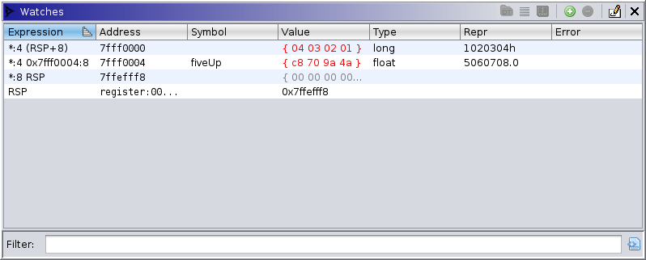

|  |
Watches refer to expressions which are evaluated each pause in order to monitor the value of variables in the target machine state. The watch variables are expressed in Sleigh and evaluated in the current thread's context at the current point in time. If the current trace is live and at the present, then the necessary target state is queried and recorded. The watch can be assigned a data type so that the raw data is rendered in a meaningful way. When applicable, that data type can optionally be applied to the trace database. Some metadata about the watch is also given, e.g., the address of the value.
For those less familiar with Sleigh, here are some example expressions:
*:4 (RSP+8): Display 4 bytes of [ram] starting 8 bytes after the offset
given by register RSP.*:4 0x7fff0004:8: Display 4 bytes starting at ram:7fff0004. The extraneous,
but required, size specifier on constant derefs is a known issue. Just use the target's
pointer size in bytes.*:8 RSP: Display 8 bytes of [ram] starting at the offset given by register
RSP.RSP: Display the value of register RSP.The table displays and allows modification of each watch. It has the following columns:
RIP will disappear when
switching to a 32-bit trace, or *:8 (*:8 (RSP+8)) may cause an invalid
dereference if an x86 PUSH causes *:8 (RSP+8) to become 0.The watches window provides the following actions:
This action is available when there's an active trace, and at least one watch with an address and data type is selected. If so, it applies that data type to the value in the listing. That is, it attempts to apply the selected data type to the evaluated address, sizing it to the value's size.
This action is available when there's an active trace, and at least one watch with memory
addresses is selected. It selects the memory range comprising the resulting value. This only
works when the outermost operator of the expression is a memory dereference. It selects the
range at the address of that dereference having the size of the dereference. For example, the
expression *:8 RSP would cause 8 bytes of memory, starting at the offset given by
RSP, to be selected in the dynamic listing.
This action is available when there's an active trace, and at least one watch with memory
reads is selected. It selects all memory ranges dereferenced in the course of expression
evaluation. This can be useful when examining a watch whose value seems unusual. For example,
the expression *:8 RSP would cause 8 bytes of memory, starting at the offset given
by RSP, to be selected in the dynamic listing -- the same result as Select Range. However, the
expression *:4 (*:8 RSP) would cause two ranges to be selected: 8 bytes starting
at RSP and 4 bytes starting at the offset given by *:8 RSP.
This action is always available. It adds a blank watch to the table. Modify the expression to make the entry useful.
This action is available when at least one watch is selected. It removes those watches.
The watch window uses colors to hint about changes in and freshness of displayed values. They can be configured in the tool's options. By default, changed values are displayed in red, and stale values are displayed in dark grey. A "stale" value is one which depends on any register or memory whose contents are not known. The value displayed is that computed from the last recorded contents, defaulting to 0 when never recorded. Simply, a "changed" watch is one whose value has just changed. For example, if a value changes as result of stepping, then that watch is changed. However, given the possibility of rewinding, changing thread focus, etc., "changed" is actually subtly more flexible. The watch remembers the evaluation from the user's last coordinates (time, thread, frame, etc.) as well as the current coordinates. So, "changed" more precisely refers to a watch whose value differs between those two coordinates. This permits the user to switch focus between different coordinates and quickly identify what is different.